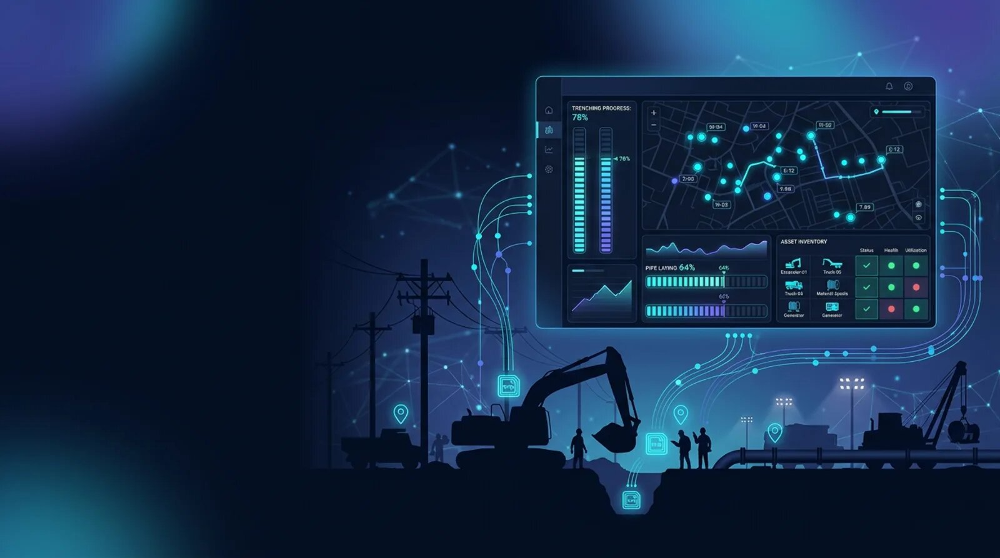

AI software for crew visibility, access management, asset tracking, inventory control, trenching progress, and compliance across utility infrastructure operations.

Utility construction projects require continuous coordination between field crews, supervisors, contractors, equipment operators, material suppliers, inspectors, and project managers. Power transmission lines, underground distribution systems, natural gas pipelines, water pipelines, fiber optic corridors, and substation construction projects often extend across many miles of right-of-way, making workforce coordination and material accountability increasingly difficult as projects grow.
UtilCon AI delivers AI and IoT software designed specifically for utility construction organizations that require accurate identification, location awareness, and operational analysis throughout the construction lifecycle. Artificial intelligence processes identification events collected through RFID, BLE, GPS, and LoRaWAN technologies, transforming field activity into actionable operational information for project managers, construction supervisors, and safety professionals.
Rather than replacing existing construction management or engineering software, the AI layer enhances operational decision-making by organizing workforce movement, material identification, equipment utilization, work package completion, and project documentation into structured digital records. This approach helps utility contractors improve coordination while maintaining accurate construction records for complex infrastructure projects.
The software supports organizations constructing:
Artificial Intelligence of Things, commonly called AIoT or AI and IoT, combines artificial intelligence with connected industrial devices, wireless identification technologies, and construction systems to improve operational decision-making. Depending on project requirements, AIoT solutions may incorporate Industrial AI, Edge AI, machine learning, computer vision, and Physical AI alongside RFID, BLE, GPS, and LoRaWAN technologies.
Utility construction generates large volumes of operational data throughout daily activities. Personnel enter and leave construction zones, materials move between storage yards and installation locations, equipment is reassigned across multiple projects, and work progresses through excavation, conduit installation, cable pulling, pole erection, welding, testing, and commissioning.
Without intelligent analysis, this information often remains fragmented across spreadsheets, paper reports, inspection records, and disconnected software systems.
UtilCon AI organizes these identification events into meaningful operational insights that support:
The emphasis remains on identification and location rather than environmental sensing, helping construction organizations improve operational visibility across geographically distributed projects.
Managing personnel across utility construction projects involves more than simply recording attendance. Construction organizations must verify worker authorization, monitor contractor access, coordinate multiple field teams, and maintain accurate records supporting safety programs, customer requirements, and regulatory compliance.
UtilCon AI applies artificial intelligence to identification information collected throughout daily construction operations. RFID crew badges, secure access readers, BLE proximity technologies, and GPS-enabled fleet data provide continuous records of workforce movement across active job sites.
AI software analyzes these records to help construction managers understand workforce activity throughout the project without requiring manual reconciliation of sign-in sheets or separate contractor reports.
Examples of operational insights include:
Project supervisors gain greater visibility into daily workforce operations while maintaining consistent digital documentation throughout construction.
Utility construction frequently occurs along transmission corridors, pipeline easements, municipal utility routes, and remote infrastructure locations where multiple crews work simultaneously.
AI-assisted workforce coordination helps organizations monitor activity across:
Rather than continuously monitoring individuals, the software analyzes identification events to support project coordination, resource planning, and construction documentation.
Utility construction organizations maintain extensive records demonstrating that only authorized personnel perform specialized work. Digital workforce identification contributes to this documentation by associating personnel records with construction activities, work locations, and assigned project responsibilities.
Historical records can support:
This structured approach reduces administrative effort while helping organizations maintain accurate records throughout long-duration utility infrastructure projects.
Utility construction projects depend on the coordinated movement of thousands of materials and specialized assets across transmission corridors, pipeline rights-of-way, substations, and temporary laydown yards. Utility poles, transmission structures, cable reels, conduit bundles, transformers, switchgear, valves, manholes, vault assemblies, and prefabricated components are continuously received, stored, transported, and installed throughout the project lifecycle.
Maintaining accurate visibility of these resources is essential for avoiding installation delays, preventing misplaced materials, supporting procurement decisions, and documenting completed work.
UtilCon AI applies artificial intelligence to identification data collected from RFID asset tags, BLE identifiers, GPS-enabled fleet systems, and material management software. Rather than manually reconciling delivery records and inventory spreadsheets, project teams receive organized information that reflects the current location and operational status of construction assets.
AI-assisted analysis supports:
Construction managers can quickly determine whether critical materials are available, identify assets awaiting installation, and coordinate deliveries according to project schedules.
Utility construction often spans dozens or hundreds of miles, requiring materials to move through manufacturers, logistics providers, regional warehouses, staging yards, and active work sites before installation.
AI software helps organize material movement throughout this process by analyzing identification records associated with each transfer.
Examples include:
Accurate digital records improve collaboration between procurement teams, warehouse personnel, construction supervisors, and project managers while reducing manual inventory reconciliation.
Utility construction organizations invest heavily in specialized equipment that supports excavation, drilling, lifting, cable installation, welding, testing, and commissioning activities. Efficient scheduling of these resources directly influences project productivity and budget performance.
UtilCon AI analyzes identification and location information associated with construction equipment to provide operational visibility without changing existing fleet management processes.
Construction teams can review:
This information assists project planners when allocating equipment across multiple construction contracts while reducing unnecessary equipment transfers and rental costs.
Utility infrastructure projects progress through carefully planned construction phases, each requiring verification before subsequent work can begin. Activities such as trench excavation, conduit placement, cable pulling, pole erection, pipeline welding, backfilling, electrical testing, and commissioning generate large volumes of documentation that must be associated with specific work packages.
UtilCon AI applies artificial intelligence to identification records collected throughout construction, helping organizations organize completed activities into structured project documentation.
Examples of analyzed project milestones include:
Project teams gain greater visibility into construction progress while maintaining consistent documentation supporting quality assurance and customer acceptance.
Large utility projects are divided into work packages that must be completed according to engineering schedules and contractual milestones.
Artificial intelligence assists project managers by organizing identification records associated with:
Rather than replacing engineering judgment, the software provides structured information that supports informed decision-making throughout project execution.
Many utility owners require permanent records identifying when infrastructure components were installed, where they were installed, and which construction teams completed the work.
Examples include:
UtilCon AI associates digital identification records with installation activities, helping organizations establish traceability throughout the asset lifecycle.
Historical installation records can support:
RFID readers, BLE proximity technologies, GPS-enabled vehicles, and LoRaWAN communications generate valuable identification events throughout utility construction projects. Independently, these technologies simply record movement, presence, or location.
UtilCon AI transforms these raw identification events into structured operational information that supports project execution.
The software processes field information through several stages:
This process allows project managers, engineering teams, safety officers, logistics personnel, and executives to access consistent operational information while reducing manual reporting requirements.
This workflow diagram illustrates how identification data collected from utility construction field operations, including RFID crew badges, RFID-tagged utility poles, cable reels, construction equipment, BLE proximity devices, GPS-enabled fleet vehicles, and LoRaWAN communications, is processed by AI software. The system validates and correlates field data with work packages, analyzes operational activities, and generates real-time dashboards, project progress, asset visibility, safety compliance, logistics coordination, and executive reports for construction management teams.
AI software supports a wide variety of utility infrastructure construction activities where workforce coordination, material accountability, and project documentation are operational priorities.
Common applications include:
Each application benefits from improved operational visibility, structured project documentation, and AI-assisted analysis of identification data collected throughout construction activities.
Utility construction projects generate large volumes of operational information every day. Field supervisors, project managers, construction engineers, safety officers, procurement teams, and executive leadership require timely, organized information that supports planning, resource allocation, compliance, and project delivery.
UtilCon AI transforms identification and location data into structured operational outputs that assist decision-making across utility construction projects. Instead of reviewing disconnected spreadsheets, paper reports, and manually updated logs, authorized personnel can access consistent project information generated from field activities.
Typical operational outputs include:
These outputs support better coordination between engineering offices, project controls, logistics teams, and construction supervisors while reducing administrative effort.
Utility construction organizations already depend on established software for engineering, scheduling, procurement, document control, geographic information systems (GIS), enterprise resource planning (ERP), and project management. Replacing these business-critical applications is rarely practical.
UtilCon AI is designed to complement existing software by supplying reliable identification and location information that can be shared with enterprise systems.
The solution can support integration with:
This integration approach enables organizations to improve operational visibility without disrupting established project delivery processes.
Utility construction environments vary considerably depending on project type, terrain, regulatory requirements, and infrastructure owner specifications. UtilCon AI is designed to support identification and location workflows across a wide range of utility infrastructure projects.
Typical applications include:
Each application benefits from improved workforce coordination, digital material identification, construction documentation, and project visibility.
Utility construction organizations require solutions that reflect real operational challenges rather than generic software features. UtilCon AI focuses on the identification and location requirements that directly support construction execution across distributed field operations.
Key capabilities include:
The software is designed to provide practical operational value while supporting engineering accuracy, construction quality, and regulatory documentation.
UtilCon AI is developed within Aperture Venture Studio, with support from GAO, building upon more than two decades of experience delivering IoT solutions for industrial organizations. This experience includes serving thousands of customers and successfully supporting thousands of IoT projects across construction and infrastructure environments.
Continuous investment in research and development, comprehensive quality assurance practices, and expert technical support contribute to the reliability of the solution. Development is guided by Ph.D. professionals from leading universities together with experienced engineers, industry specialists, strategic partners, and technology investors.
Organizations associated with this experience have supported Fortune 500 companies, leading research institutions, prestigious universities, and government agencies throughout the United States and Canada. These practical insights help shape AI and IoT software that aligns with real-world utility construction requirements.
Utility construction organizations face increasing pressure to complete complex infrastructure projects while maintaining workforce accountability, material visibility, regulatory compliance, and accurate project documentation. AI and IoT software supports these objectives by organizing identification data into operational information that helps improve planning, coordination, and execution.
Applications extend across every major stage of utility infrastructure development, including:
By emphasizing identification and location technologies instead of traditional sensing approaches, UtilCon AI helps organizations maintain accurate digital records for personnel, materials, equipment, and construction activities throughout the project lifecycle.
Every utility construction project has unique operational requirements based on project scope, regulatory obligations, geographic conditions, contractor structures, and customer specifications. Selecting the appropriate AI and IoT solution begins with understanding existing workflows and identifying opportunities to improve workforce coordination, material accountability, and project documentation.
The UtilCon AI team works with utility contractors, engineering organizations, infrastructure owners, and project managers to evaluate operational requirements and recommend identification and location solutions that integrate with existing business systems.
Whether your organization is building transmission lines, underground pipelines, substations, utility corridors, or municipal infrastructure, our specialists can help determine an implementation approach aligned with your construction objectives.
Contact UtilCon AI →